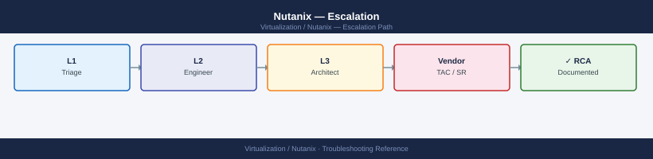
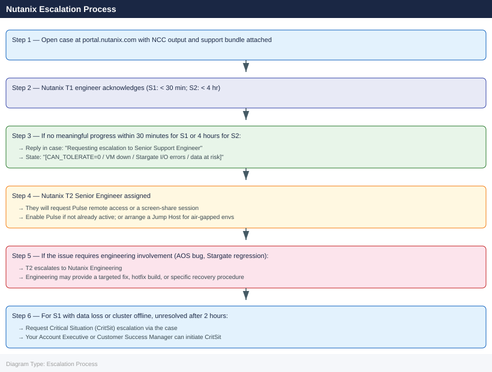

Nutanix — Escalation¶

Before you begin¶
- Access required: Nutanix Portal account linked to your support contract (portal.nutanix.com); SSH access to any CVM in the cluster (default user:
nutanix); Prism Element admin access - Do NOT restart multiple CVMs simultaneously — each CVM is the storage controller for its node; taking multiple CVMs offline at once can reduce the cluster below RF threshold and cause data loss
- NCC and support bundle first — GSS will request these immediately; having them ready before calling significantly reduces time to resolution
- Enable Pulse before calling — Pulse (call-home) allows GSS engineers to remotely access the cluster via a secure tunnel, which accelerates diagnosis for complex issues
When to Escalate Immediately¶
Escalate to Nutanix GSS without delay for any of these:
CAN_TOLERATE_FAILURE_COUNT=0— the cluster cannot tolerate any further failure; one more disk or node failure = data loss- Production VMs are down and cannot be restored by standard procedures
- Data loss suspected — Stargate returning I/O errors to VMs; VMs crashing on disk write
- CVM unresponsive — SSH to CVM fails; IPMI console shows hardware faults
- Multiple disks failed on the same node — beyond RF tolerance
- Cluster will not accept writes — storage full with no quick way to free space
- Cluster upgrade failure — AOS/AHV upgrade stuck or failed mid-way
For all other issues: attempt NCC triage and log review first (see Diagnostics), then open a lower-severity case.
Pre-Escalation Self-Check¶
Run these before opening the case.
| Check | Command | Expected result |
|---|---|---|
| AOS version | ncli cluster info \| grep -i version |
Note full version (e.g. 6.7.2) |
| Cluster UUID | ncli cluster info \| grep -i uuid |
Note UUID for the case |
| RF and tolerance | ncli cluster info \| grep -i "tolerate\|replication" |
CAN_TOLERATE_FAILURE_COUNT > 0 |
| Node health | ncli host list |
All nodes show UP |
| Disk health | ncli disk list \| grep -v NORMAL |
Empty output (all disks NORMAL) |
| CVM reachability | ping <cvm-ip> from another CVM |
CVM responds |
| Genesis status | genesis status (on CVM) |
All services Running |
| NCC quick check | ncc --health_checks run_all 2>&1 \| tail -30 |
PASS (or note which checks FAIL) |
Step-by-Step Data Collection¶
1. Get the cluster info and version¶
# SSH to any CVM as nutanix
ssh nutanix@<cvm-ip>
# Cluster name, AOS version, RF, UUID
ncli cluster info
# Node serial numbers and IPs (required for case registration)
ncli host list
# Any disk not in NORMAL state
ncli disk list | grep -v NORMAL
nutanix@192.168.1.45's password:
Last login: Wed Jan 15 14:32:18 2025 from 10.0.0.88
nutanix@cvm-45:~$ ncli cluster info
Cluster Name : prod-cluster-01
Cluster UUID : 00058e6e-8888-4d2f-a1b2-3c4d5e6f7g8h
AOS Version : 6.5.2.1
Replication Factor : 3
Redundancy Factor : 2
Encrypted : false
Cluster Redundancy State : REDUNDANT
nutanix@cvm-45:~$ ncli host list
Host ID Serial Number IP Address Hypervisor
========================================================================
00058e6e-1111-4d2f-a1b2-3c4d5e6f : NTNX-ABC123XYZ01 : 192.168.1.41 : AHV
00058e6e-2222-4d2f-a1b2-3c4d5e6f : NTNX-ABC123XYZ02 : 192.168.1.42 : AHV
00058e6e-3333-4d2f-a1b2-3c4d5e6f : NTNX-ABC123XYZ03 : 192.168.1.43 : AHV
00058e6e-4444-4d2f-a1b2-3c4d5e6f : NTNX-ABC123XYZ04 : 192.168.1.45 : AHV
nutanix@cvm-45:~$ ncli disk list | grep -v NORMAL
Disk ID State Host IP Capacity
========================================================================
00058e6e-disk-5555-4d2f-a1b2 : DEGRADED : 192.168.1.42 : 1.6 TB
00058e6e-disk-6666-4d2f-a1b2 : DEGRADED : 192.168.1.42 : 1.6 TB
Common errors
| Error | Fix |
|---|---|
Connection refused |
Verify the CVM IP is correct and SSH service is running; check firewall rules allow port 22 from your source IP. |
ncli: command not found |
Ensure you are logged in as the nutanix user and the PATH includes /usr/local/nutanix/bin; run source /etc/profile if needed. |
Permission denied (publickey,password) |
Confirm the nutanix user credentials are correct and the CVM's SSH key-based authentication is configured if required by your environment. |
2. Run NCC health checks¶
# Full NCC run — attach the full output to the case
ncc --health_checks run_all 2>&1 | tee /tmp/ncc-$(date +%Y%m%d%H%M).txt
# Quick check of critical checks only
ncc --health_checks run_all --ncc_critical_only=true 2>&1 | tail -100
Running NCC health checks on cluster...
[2024-01-15 14:32:18] Starting NCC v4.8.2 health check suite
[2024-01-15 14:32:19] Cluster: prod-cluster-01 | Nodes: 4 | AOS: 6.5.2.1
[2024-01-15 14:32:22] CHECK: DNS Resolution — PASS
[2024-01-15 14:32:25] CHECK: NTP Synchronization — PASS
[2024-01-15 14:32:31] CHECK: Disk Space — WARNING (node-3: 78% used)
[2024-01-15 14:32:45] CHECK: Network Connectivity — PASS
[2024-01-15 14:32:52] CHECK: Hypervisor Health — PASS
[2024-01-15 14:33:18] CHECK: Storage Pool Status — PASS
[2024-01-15 14:33:42] CHECK: Replication Factor — PASS
[2024-01-15 14:34:05] Health check complete. Results saved to /tmp/ncc-202401151432.txt
Summary: 7 PASS, 1 WARNING, 0 FAIL
Running critical checks only...
[2024-01-15 14:34:12] CHECK: Cluster Quorum — PASS
[2024-01-15 14:34:18] CHECK: Storage Redundancy — PASS
[2024-01-15 14:34:25] CHECK: Network Heartbeat — PASS
[2024-01-15 14:34:31] Critical checks complete: 3 PASS, 0 FAIL
Common errors
| Error | Fix |
|---|---|
ncc: command not found |
Ensure NCC is installed on the Prism Central or CVM by running yum install ncc or verify it is in your PATH. |
ERROR: Unable to connect to cluster — Connection refused |
Verify cluster connectivity and that you are running the command from a node with network access to the cluster management interface. |
ERROR: Permission denied — ncc requires root or sudoer privileges |
Run the command with sudo or ensure your user account has appropriate sudo permissions for NCC execution. |
GSS will ask for the full NCC output as the first diagnostic step. A fresh NCC run captures the current cluster health state.
3. Collect the support bundle¶
Via Prism Element UI:
- Prism Element → click the Settings gear → Log Collector.
- Set the time range to cover the failure period (minimum last 4 hours).
- Click Collect Logs.
- Wait for the bundle to be generated (5–20 minutes).
- Download and attach to the case.
Via CLI:
# SSH to any CVM as nutanix
# Generate support bundle (saves to /home/nutanix/support-bundle/)
logbay collect --case_id="<case-number>"
# Without case ID:
logbay collect --output_dir="/tmp/logbay-$(date +%Y%m%d)"
# List generated bundles
ls -lh ~/support-bundle/
Collecting diagnostic data...
Gathering cluster information...
Collecting logs from all nodes...
Processing support bundle...
Support bundle generated successfully.
Bundle location: /home/nutanix/support-bundle/logbay_bundle_20240115_143022.tar.gz
Bundle size: 2.3G
Compression completed in 47 seconds.
total 9.2G
-rw-r--r-- 1 nutanix nutanix 2.3G Jan 15 14:30 logbay_bundle_20240115_143022.tar.gz
-rw-r--r-- 1 nutanix nutanix 1.8G Jan 14 09:15 logbay_bundle_20240114_091547.tar.gz
-rw-r--r-- 1 nutanix nutanix 3.1G Jan 13 16:42 logbay_bundle_20240113_164201.tar.gz
Common errors
| Error | Fix |
|---|---|
logbay: command not found |
Ensure you are SSH'd to a Nutanix CVM and have the correct PATH set, or source the Nutanix environment setup script. |
Permission denied |
Run the command as the nutanix user or with sudo; verify your user has write access to /home/nutanix/support-bundle/. |
Disk space low: insufficient space for bundle |
Free up disk space on the CVM or specify an alternate output directory with --output_dir pointing to a partition with adequate free space. |
4. Collect targeted logs for specific issues¶
| Issue Type | Additional Collection |
|---|---|
| CVM not responding | ncli host list; IPMI/iDRAC console; genesis status on affected CVM |
| Stargate I/O errors | allssh grep -i "stargate\|iof\|I/O error" /home/nutanix/data/logs/stargate.INFO |
| Genesis failure | cat /home/nutanix/data/logs/genesis.out on affected CVM |
| Disk failure | ncli disk list; smartctl -a /dev/<disk> on the AHV host |
| Upgrade failure | Upgrade log: /home/nutanix/data/logs/upgrade.out |
| Network issue | ping <all cvm IPs> from each CVM; ncli network switch-interfaces list |
5. Write the timeline¶
AOS version: 6.7.2
Cluster UUID: xxxxxxxx-xxxx-xxxx-xxxx-xxxxxxxxxxxx
Cluster: prod-nutanix-01 (4 nodes, RF2)
CAN_TOLERATE_FAILURE_COUNT: 0 (1 disk failed on node 3)
Issue first observed: 2026-06-14 10:00 UTC
Last NCC clean run: 2026-06-13 22:00 UTC
Changes in 24h before the issue:
- 09:30: Node 3 NCC alert: "Disk [SSD-01] marked as to_remove"
- 10:00: Stargate I/O errors observed on VMs hosted on node 3
- 10:05: VM "db-prod-01" on node 3 shows kernel panic (disk I/O failure)
Steps already taken:
- ncli disk list: 1 disk on node 3 shows state "DEAD"
- ncc run: "disk_health_check" FAIL on node 3
- Did NOT remove the disk or restart the CVM
- Did NOT initiate disk repair
Blast radius: 1 production VM down (db-prod-01); cluster at RF minimum; 1 more failure = data loss
How to Open the Case on portal.nutanix.com¶
-
Go to portal.nutanix.com and log in with your Nutanix Portal account (linked to your support contract).
-
Click Support → Cases → Open New Case.
-
Under Cluster, select the affected cluster from the registered clusters list. This auto-populates the cluster serial numbers and AOS version.
-
Under Severity, select:
- S1 — Critical: Cluster down or cannot tolerate failure (CAN_TOLERATE_FAILURE_COUNT=0); production VMs down; data loss suspected; no workaround
- S2 — Major: Significant degradation; partial outage; cluster is running but at elevated risk; workaround exists but incomplete
- S3 — Moderate: Non-critical cluster impact; single non-critical VM affected; workaround available
-
S4 — Low: General questions, how-to, feature requests, pre-upgrade planning
-
In the Summary field: symptom + scope. Example:
Nutanix prod-01 — disk DEAD on node 3, CAN_TOLERATE_FAILURE=0, Stargate I/O errors on db-prod-01. -
In the Description field, paste:
- AOS version and cluster UUID from Step 1
- Failed disk state from Step 1
- NCC check results summary from Step 2
-
The timeline from Step 5
-
Under Attachments, upload:
- The NCC output from Step 2
-
The support bundle from Step 3
-
Click Submit. You receive a case number immediately.
-
S1/S2 only: also call the Nutanix phone support number:
- The current phone numbers are listed at portal.nutanix.com → Support → Phone Support after login (numbers change; do not rely on hardcoded numbers)
- State "Severity 1 — cluster cannot tolerate failure, production VM down, case number XXXXXXXX" at the start of the call
Escalation Path¶

Enabling Remote Access for GSS (Pulse)¶
Nutanix support engineers access clusters via Pulse (call-home tunnelling).
Prism Element → Settings gear → Pulse
Enable Pulse: On
Test Connection: confirm Pulse shows "Connected"
If Pulse is disabled (air-gapped environments): - GSS will use WebEx/Teams screen share - Or you provide Jump Host access under GSS supervision - Let GSS know Pulse is disabled in the case description
What NOT to Do¶
| Do NOT do this | Why | What to do instead |
|---|---|---|
| Restart multiple CVMs simultaneously | Each CVM is the storage controller for its node; restarting multiple at once reduces cluster RF below safe threshold and risks data loss | Only restart one CVM at a time, and only when GSS explicitly instructs |
| Remove a failed disk without GSS direction | A disk marked DEAD or FAILED may still hold component data that is part of an in-progress rebuild; removing it can cause permanent data loss | Let GSS confirm the rebuild state (ncli disk list + logbay) before any disk removal |
| Shut down a degraded cluster node | Takes node capacity and storage components offline; in a degraded cluster this may push below RF | Leave all nodes powered on; contact GSS before any node power operation |
| Run disk repair or scrub without GSS | Triggers background I/O that competes with recovery; changes the storage state GSS is analysing | Let GSS direct the exact repair procedure after reviewing the NCC and logbay data |
| Apply AOS or AHV upgrade during an active incident | Upgrades change the codebase and cluster state mid-incident; upgrade may fail on the degraded cluster | Freeze all upgrades until the incident is fully resolved and GSS clears it |
| Generate a fresh support bundle without noting the filename | Old bundles overwrite the incident state | Note the filename and timestamp before generating a new bundle; keep the incident-time bundle |
Useful Commands for Case Updates¶
# SSH to any CVM as nutanix — paste these into every case update
# Cluster state
ncli cluster info
# Node health (looking for any DOWN nodes)
ncli host list
# Disk health (looking for non-NORMAL disks)
ncli disk list | grep -v NORMAL
# CVM service status on this node
genesis status
# Stargate I/O error check (last 100 lines)
tail -100 /home/nutanix/data/logs/stargate.INFO | grep -i "error\|FATAL\|I/O"
# Quick NCC summary
ncc --health_checks run_all --ncc_critical_only=true 2>&1 | tail -30
# Cluster storage usage
ncli cluster info | grep -i "storage\|usage\|capacity"
nutanix@NTNX-CVM-001:~$ ncli cluster info
Cluster UUID : 0005b48f-1234-5678-abcd-ef0123456789
Cluster Name : prod-cluster-01
Redundancy Factor : 2
Fingerprint : a1b2c3d4e5f6
External Subnet : 10.20.0.0/24
Cluster Incarnation Number : 1234567890
nutanix@NTNX-CVM-001:~$ ncli host list
Host ID | Host Name | Host Address | State | Cluster
--------|------------------|--------------|--------|----------
1 | NTNX-PHY-001 | 10.20.1.10 | UP | prod-cluster-01
2 | NTNX-PHY-002 | 10.20.1.11 | UP | prod-cluster-01
3 | NTNX-PHY-003 | 10.20.1.12 | UP | prod-cluster-01
nutanix@NTNX-CVM-001:~$ ncli disk list | grep -v NORMAL
(no output — all disks are NORMAL)
nutanix@NTNX-CVM-001:~$ genesis status
Nutanix Cluster Manager (NCM) : UP
Cassandra : UP
Zookeeper : UP
Stargate : UP
Prism : UP
Curator : UP
nutanix@NTNX-CVM-001:~$ tail -100 /home/nutanix/data/logs/stargate.INFO | grep -i "error\|FATAL\|I/O"
(no output — no errors in last 100 lines)
nutanix@NTNX-CVM-001:~$ ncc --health_checks run_all --ncc_critical_only=true 2>&1 | tail -30
============= NCC Health Check Summary =============
Total Checks Run : 47
Passed : 46
Failed : 0
Warnings : 1
Skipped : 0
WARNING: Cluster time drift detected on NTNX-PHY-002 (offset: 2.3s)
Overall Status : PASS
nutanix@NTNX-CVM-001:~$ ncli cluster info | grep -i "storage\|usage\|capacity"
Usable Capacity : 45.6 TB
Used Capacity : 23.4 TB
Free Capacity : 22.2 TB
Usage Percentage : 51.3%
Common errors
| Error | Fix |
|---|---|
Connection refused |
Verify the CVM is running and SSH is enabled; check firewall rules allowing port 22 to the CVM IP. |
ncli: command not found |
Confirm you are logged in as the nutanix user and the PATH includes /home/nutanix/bin; source the environment if needed. |
Permission denied |
Ensure your SSH key is authorized in /home/nut |
Support SLA Reference¶
| Severity | Definition | Initial Response SLA |
|---|---|---|
| S1 — Critical | Cluster down; cannot tolerate failure; data loss; production VMs down | < 30 min (24×7) |
| S2 — Major | Significant degradation; partial outage; cluster running at risk | < 4 hours (24×7) |
| S3 — Moderate | Non-critical impact; single non-critical VM; workaround available | Next business day |
| S4 — Low | General questions, how-to, feature requests, planning | Next business day |
Post-Incident¶
After issue resolution:
- Request a Root Cause Analysis (RCA) from GSS if the issue caused production impact (S1 cases: GSS provides RCA within 5 business days)
- Run NCC 24 hours after resolution to confirm clean state:
ncc --health_checks run_all 2>&1 | tail -30 - Update your internal incident record with the KB article reference and resolution steps
- Verify cluster tolerance is restored:
ncli cluster info | grep -i tolerateshould show CAN_TOLERATE_FAILURE_COUNT > 0
See also¶
Verify resolution¶
- Run
ncli cluster info | grep -i tolerateand confirm CAN_TOLERATE_FAILURE_COUNT > 0 - Run
ncli host listand confirm all nodes are UP - Run
ncli disk list | grep -v NORMALand confirm empty output (all disks NORMAL) - Run
ncc --health_checks run_all 2>&1 | tail -50and confirm no FAIL results - Check that the previously affected VMs are running and serving I/O without errors
- Confirm Stargate I/O error log is no longer growing:
tail -f /home/nutanix/data/logs/stargate.INFO | grep -i "error\|FATAL" - Run NCC again at 24 hours post-resolution to confirm sustained clean state